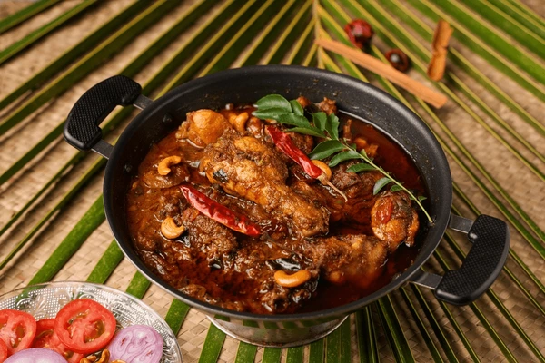

Chicken Gravy (South Indian Style)
Prep Time: 20 minutes
Cook Time: 30 minutes
Servings: 4
Ingredients:
- 500g Chicken (with bone preferred)
- 2 Onions (finely chopped)
- 2 Tomatoes (chopped)
- 2 tbsp Ginger-garlic paste
- 2 tbsp Oil (gingelly oil recommended)
- 1 tsp Mustard seeds
- Few Curry leaves
- 1 tsp Red chili powder
- 1½ tsp Coriander powder
- ½ tsp Turmeric powder
- ½ tsp Garam masala
- Salt to taste
- Water as needed
- Fresh coriander leaves – for garnish
To Grind (Optional for rich gravy):
- ¼ cup Grated coconut
- 1 tsp Poppy seeds (or cashews)
- 1 tsp Fennel seeds
- Water as needed
Instructions:
- Grind coconut, poppy seeds/cashews, and fennel into a smooth paste. Set aside.
- Heat oil in a kadai. Add mustard seeds and let them pop.
- Add curry leaves, then chopped onions. Sauté until golden brown.
- Add ginger-garlic paste and fry until raw smell goes.
- Add tomatoes and cook till soft and mushy.
- Add chili, turmeric, coriander powder, and salt. Mix well.
- Add chicken and sauté for 5–6 minutes on medium flame.
- Add water to desired consistency, cover, and cook until chicken is soft.
- Now add the ground coconut paste and garam masala.
- Simmer for 5–10 minutes till oil floats on top and gravy thickens.
- Garnish with coriander leaves and serve hot with rice, dosa, or roti.